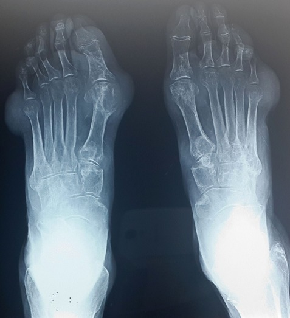

Ficha del catálogo
Artropatía gotosa
- Sistema
- Óseo
- Modalidad
- RX
- Región
- Pie y mano
- Dificultad
- Intermedio
Enfermedad por depósito de cristales de urato monosódico en articulaciones y partes blandas, que cursa con crisis inflamatorias agudas y con daño estructural en las formas crónicas. La primera metatarsofalángica es la localización clásica. Los tofos son acúmulos de cristales que pueden alcanzar gran tamaño y erosionar el hueso vecino.
Técnica
Radiografía en dos proyecciones de la articulación sintomática. El ultrasonido complementa mostrando el depósito de cristales sobre el cartílago.
Qué observar
- Erosiones en sacabocados con borde esclerótico y reborde óseo sobresaliente
- Masas densas de partes blandas correspondientes a tofos, a veces calcificadas
- Conservación relativa del espacio articular pese a erosiones llamativas
- Ausencia de osteopenia periarticular difusa
- Distribución asimétrica con predilección por el primer dedo del pie
- Signo del doble contorno en ultrasonido sobre la superficie cartilaginosa
Hallazgos
Erosiones periarticulares bien delimitadas con bordes salientes, tofos de partes blandas y preservación relativa del espacio articular.
Perlas
Que el espacio articular se conserve pese a erosiones grandes es muy característico y la diferencia de la artritis reumatoide, donde el pinzamiento aparece pronto y es uniforme.
Diagnóstico diferencial
- Artritis reumatoide
- Simétrica, con pinzamiento precoz y osteopenia periarticular.
- Artritis psoriásica
- Proliferación ósea, dactilitis y afectación de interfalángicas distales.
- Artropatía por pirofosfato
- Calcificación del cartílago articular en rodilla, muñeca y sínfisis.
Simuladores
- Nódulos reumatoideos
- Tumor de células gigantes de la vaina tendinosa
- Xantomas de partes blandas
Por modalidad
- RX
- Documenta erosiones y tofos en la enfermedad establecida
- US
- Detecta depósitos y el signo del doble contorno de forma precoz
- TC
- La tomografía de doble energía puede caracterizar el urato
Protocolo
Dos proyecciones de la articulación afectada más ultrasonido con sonda de alta frecuencia sobre cartílago y tendones.
Clasificación
Errores frecuentes
- Atribuir cualquier monoartritis aguda del primer dedo a gota sin descartar infección
- Interpretar el tofo como tumor de partes blandas
- Esperar pinzamiento articular precoz y descartar el diagnóstico por su ausencia

gota tofo urato erosion sacabocados podagra cristales doble contorno